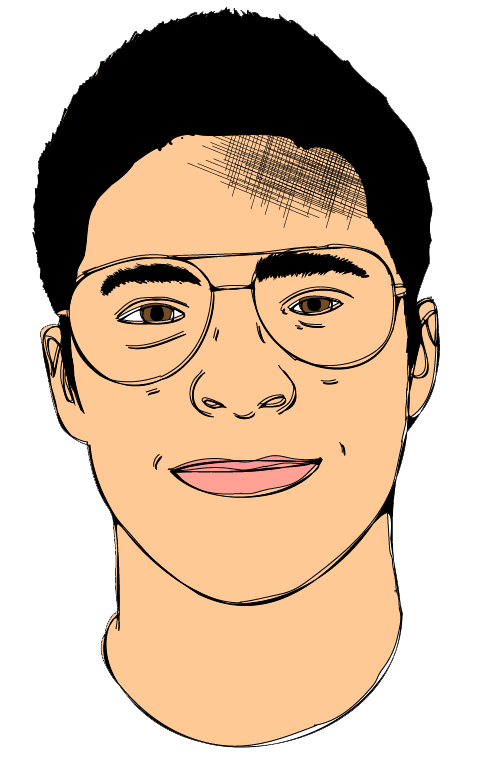

Howdy, I am Jose Garza, I generally go by Gera though. My pic is in the main page.
I am taking this class since I am interested in learning more about how different mediums of media and technologys,
and how they can influence the development and story telling process. Mostly because I am a big fan of VR.
I took HCI this past semester and I enjoyed the abstract concepts of this feild and wanted to see if
this course would also teach me similar ideas, if not more.
One source of media I use every day is YouTube.
I use it for either educational purposes, entertainment purposes, or just to stay up to
date with politics or Joe Rogan.
I don’t watch TV, but I do occasionally watch Netflix. I’ve seen GOT, Flash, Breaking Bad,
Friends, Full Metal Alchemist,
and am trying to watch haunting of the hill house.
I don’t listen to the radio but I do listen to Spotify. I generally
listen to the Beatles, J. Cole, Mac Miller, or sometimes Joe Rogan Podcasts

CLICK HERE FOR ASSIGNMENT 2